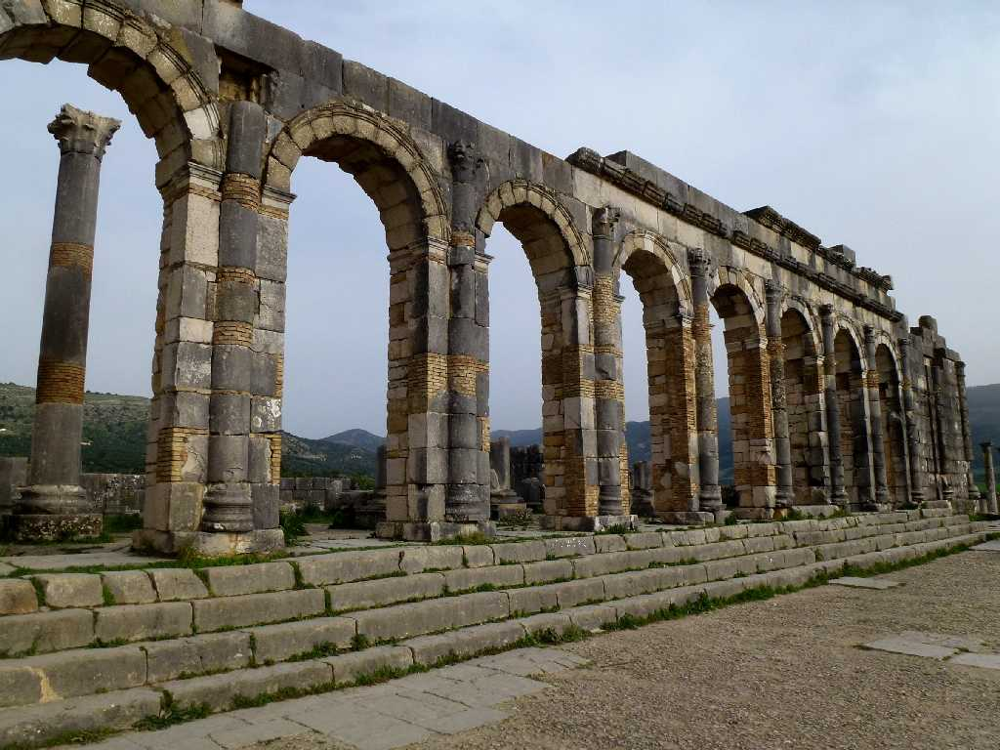
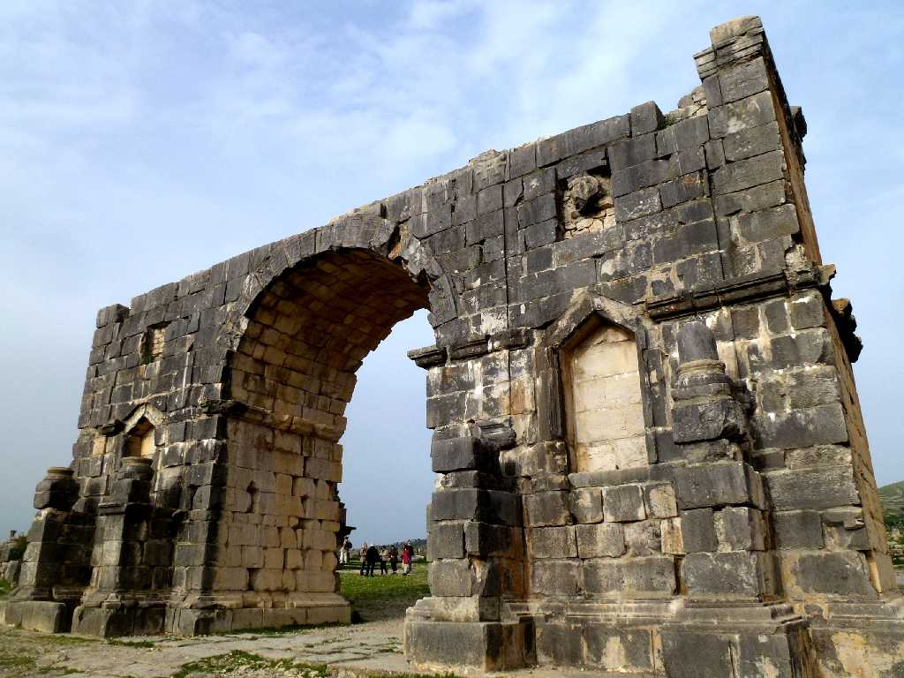
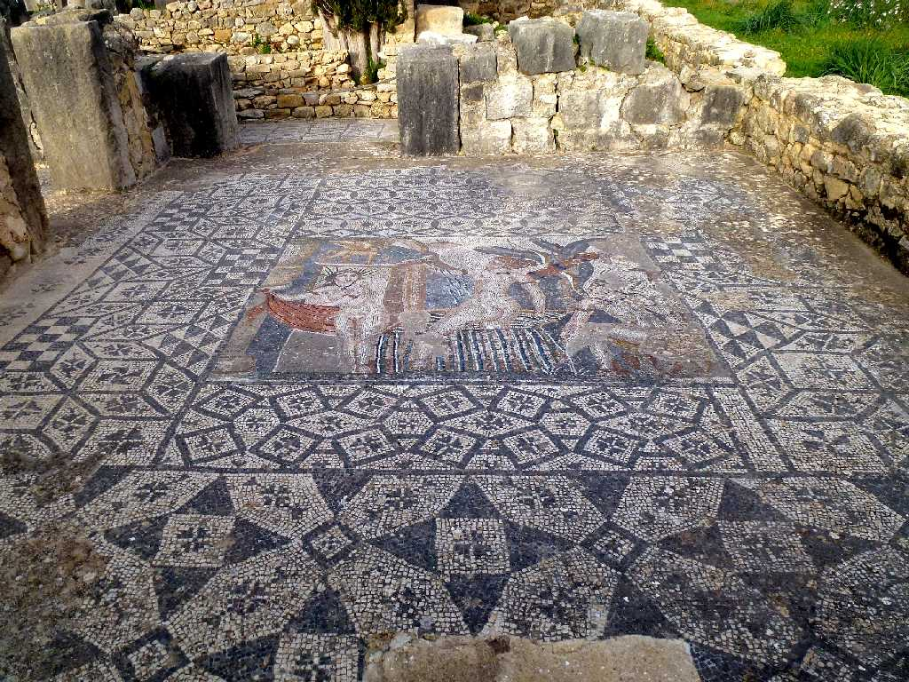
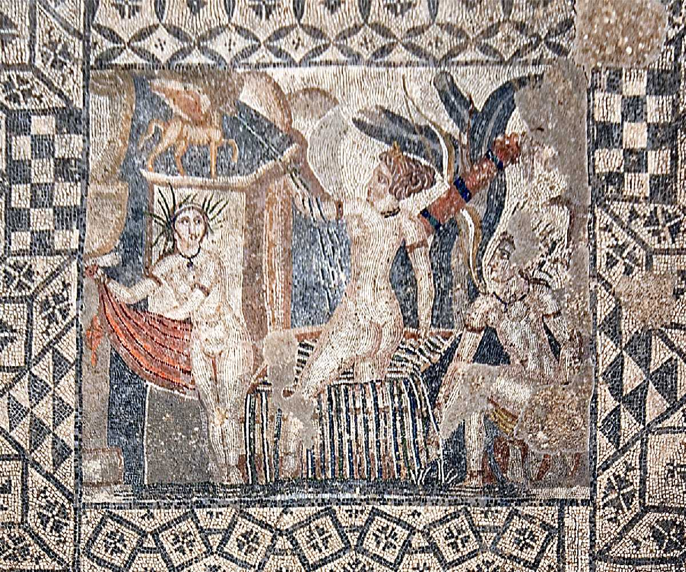

Exterior of the Basilica Roman Cities Volubilis
古代ローマ帝国の最西端にあたる街の遺跡で紀元前３世紀のカルタゴが創った街の上に紀元後４０年頃創られた街

Arch of Caracalla Roman Cities Volubilis
小麦やオリーブをローマに出荷し街が繁栄したためA.D.２１７年に創られたカラカラ帝の凱旋門

Diana and her nymph Mosaic Volubilis

美しいモザイク画が二千年の時を越えて観る事が出来る